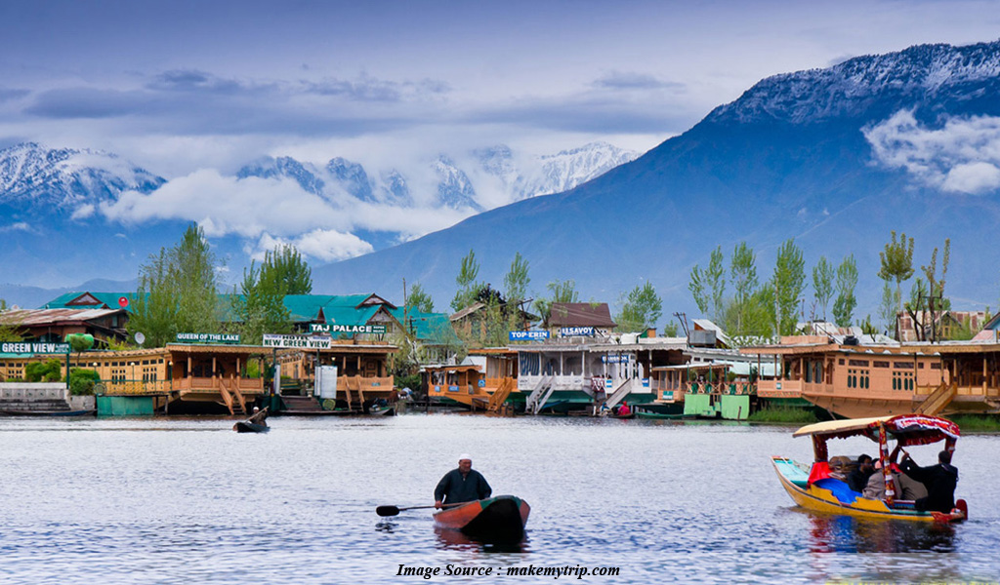
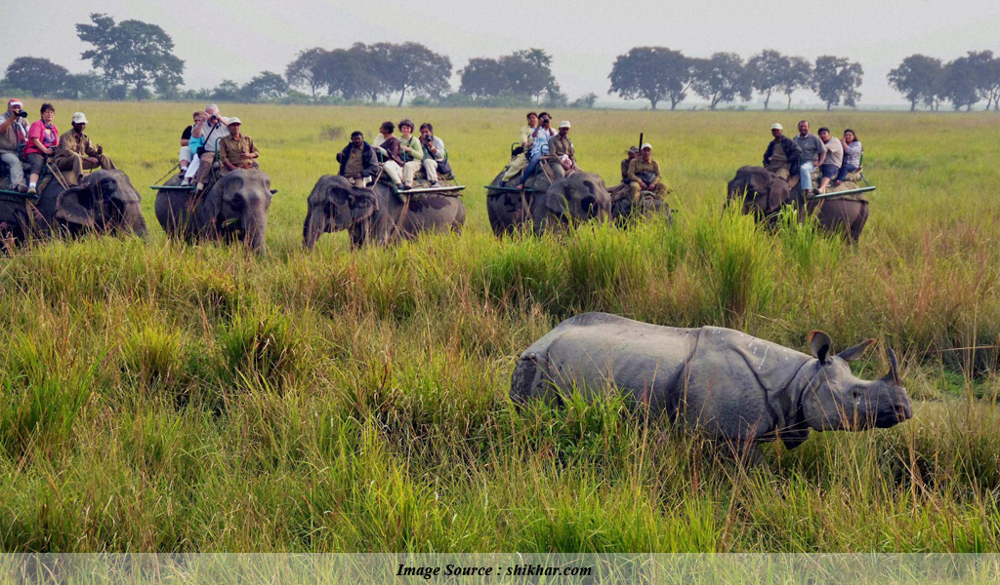
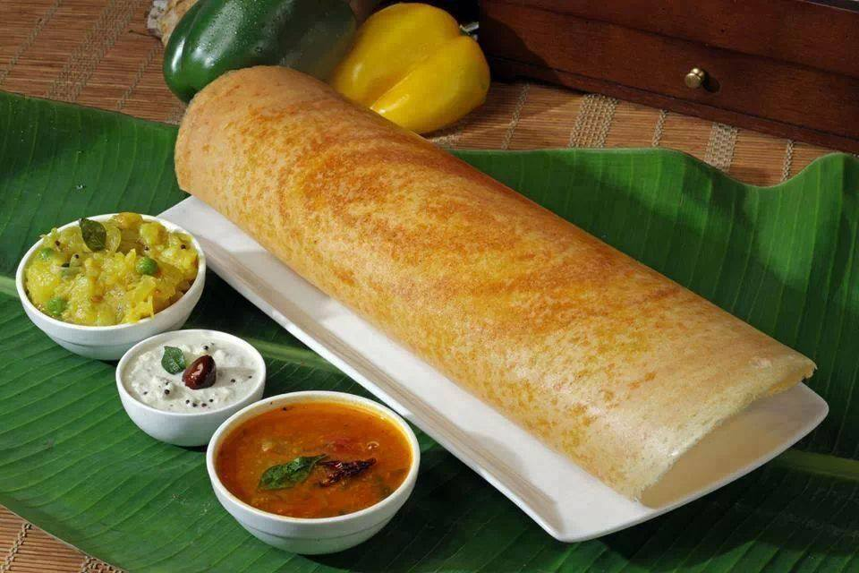
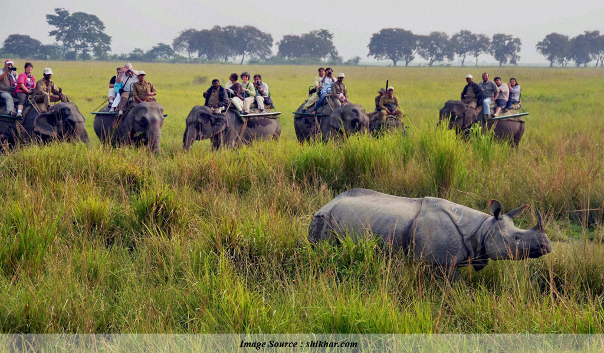
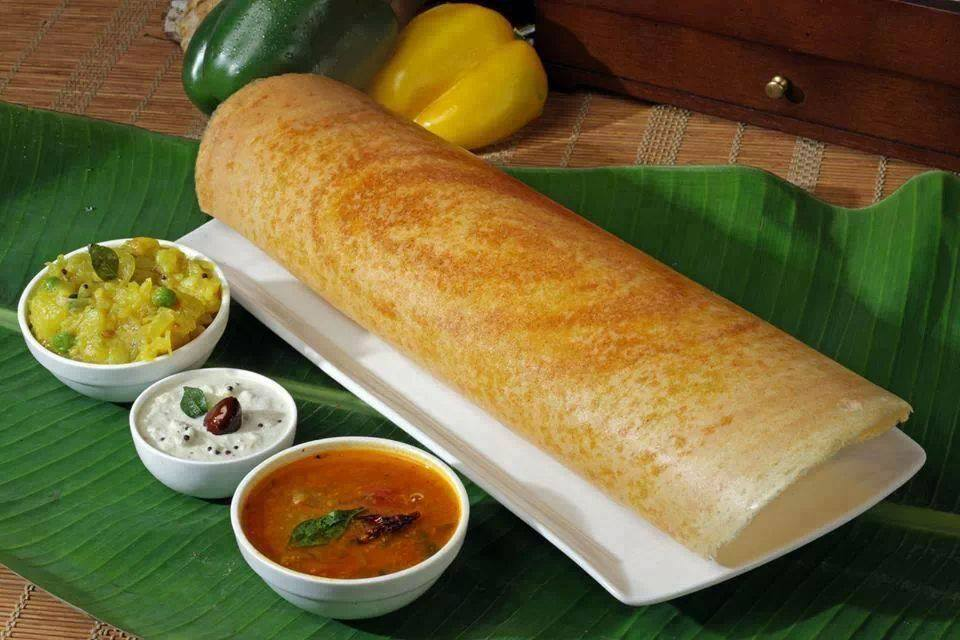

 




'It Is Better to See Something Once Than to Hear About it a Thousand Times'
India is a land covered by snow-clad high mountain peaks, beautiful vallies , ever-active rivers , long serene beaches and the raging seas .Not only India's
beauty lies in the gifts endowed upon her by mother nature but also in its glorious history , astonishing architectural works , and in the various temples where
the gods of India reside. The country might seem calm and boring for those who are not interested in topics of history, gods and culture. But, India is just not
any other country who has limited to offer. This country is a paradise for people who love photography as it not only ofers picturesque locations set in the
backgrop of beauty of nature but also beautiful monuments, a great kingdom of animals and birds and its lively streets. India is also known for it's
rich and spicy food. Well, India has a table full of dishes when it comes on exploring Indian cuisine.India also proves to be heaven for shopping-addicts as you
get a variety of items over here to drape yourself in silk or be laden with beautiful designed jewellery or embellish your house with the dazzling artefacts. The
western culture also seems to be adapted here, as India also offers various destinations to improvise your social lives and to add a pinch of fun to your weekend!
Soo many places to visit if you want to explore this country!!Cannot decide which places to shortlist??
No worries. We have handpicked top 10 destinations in India according to your taste.Go throught the lists and enjoy your tour!
All these things are worth trying and better than reading.So,what are you waiting for!!!Just pack your bags, grab your phone and charger,a pair of binoculars
and set down on a trail to discover the amazing surprises.